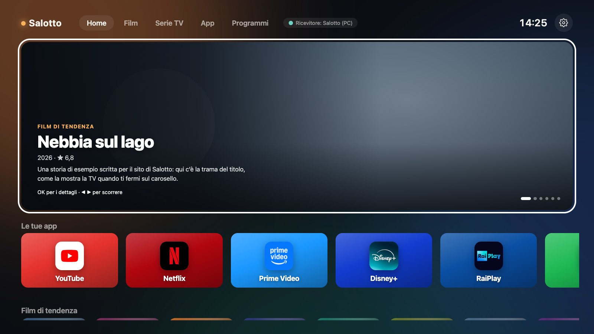

Il tuo computer diventa una TV da divano.
Salotto trasforma il PC o il Mac in una TV come Google TV: tutte le tue app di streaming in un posto solo, film e serie di tendenza in home e il telefono come telecomando.
- Gratis e open source
- Windows 10/11 e macOS
- Niente account Salotto
- Si usa con le frecce

Si usa dal divano, con le frecce.
Tastiera, telecomando USB o telefono: frecce per spostarti, OK per aprire, Indietro per tornare. Come su una TV.
Home: carosello di film e serie, le tue app e una fila per ogni servizio. Cosa vedere lo scegli tu.
Nelle schermate titoli e immagini sono di esempio.
Tutto quello che fa una TV moderna.
Le app dentro Salotto
Netflix, Prime Video, Disney+, RaiPlay, Mediaset Infinity e altre si aprono dentro Salotto con i video protetti (Widevine), senza finestre del browser.
Film e serie in home
Tendenze, “Su Netflix”, generi e la scheda di ogni titolo con “Guarda su…”, grazie al catalogo di TMDB (serve una chiave gratuita).
Il telefono come telecomando
Inquadri il codice QR e il telefono diventa telecomando, touchpad e tastiera. Protetto da PIN, sulla rete di casa.
Trasmetti dal telefono
Ricevitore DLNA per le app Android e AirPlay da iPhone e iPad: su Windows con uxplay-windows, sul Mac con il ricevitore già nel sistema.
Programmi e Store
I programmi del computer con le loro icone e uno Store con circa 40 servizi da mettere in home: streaming, musica, giochi in cloud.
Bluetooth e impostazioni
Cuffie, casse e controller da accendere, abbinare e dimenticare dalle Impostazioni, più avvio all'accensione e spegnimento dal divano.
Gratis, per Windows e Mac.
Versione 0.1.28. Un solo file da installare; gli aggiornamenti si installano sopra la versione vecchia.
Mac con chip Apple
M1, M2, M3, M4 e successivi. macOS 12 o più recente.
Salotto-0.1.28-mac-arm64.dmg · 123 MBScarica per Mac (Apple)Mac Intel
I Mac con processore Intel. Menu Apple → Informazioni su questo Mac ti dice quale hai.
Salotto-0.1.28-mac-x64.dmg · 129 MBScarica per Mac (Intel)Tutte le versioni e il codice sono su GitHub.
Domande frequenti.
Windows dice “Windows ha protetto il PC”.
L'installer non è firmato con un certificato a pagamento, quindi SmartScreen avvisa. Premi “Ulteriori informazioni” e poi “Esegui comunque”. All'installazione puoi scegliere “Solo per me” o “Per tutti gli utenti”.
Il Mac non apre Salotto la prima volta.
Salotto non è firmato con un account sviluppatore Apple. Apri il .dmg, trascina Salotto in Applicazioni e avvialo; se il Mac lo blocca vai in Impostazioni di Sistema → Privacy e sicurezza → “Apri comunque”. La prima volta chiede anche i permessi per il Bluetooth e la rete locale.
Come compaiono film e serie in home?
Salotto usa il catalogo gratuito di TMDB. Crea un account su themoviedb.org, richiedi una chiave API per uso personale e incollala in Impostazioni → Film e Serie TV. La chiave resta solo sul tuo computer.
Netflix in che qualità si vede?
Dentro Salotto i video protetti usano Widevine: su Netflix di solito fino a 720p. Se preferisci la qualità più alta, spegni Impostazioni → Sistema → “Netflix & co. dentro Salotto” e le app si apriranno in Microsoft Edge (su Mac anche Chrome).
Come uso il telefono come telecomando?
Dalla home apri “Telecomando”, inquadra il codice QR con il telefono (stessa rete Wi‑Fi) e scrivi il PIN. Puoi aggiungere la pagina alla schermata Home del telefono: diventa un'app.
Posso trasmettere come con Chromecast?
Chromecast usa un sistema chiuso che un computer non può ricevere. Salotto però fa da ricevitore DLNA (app Android come Web Video Caster o BubbleUPnP) e AirPlay per iPhone e iPad.
Il Bluetooth sul Mac non si vede.
Sul Mac Salotto gestisce il Bluetooth con il programma gratuito blueutil: nel Terminale scrivi brew install blueutil (serve Homebrew). Senza, Salotto apre le Impostazioni Bluetooth del Mac.